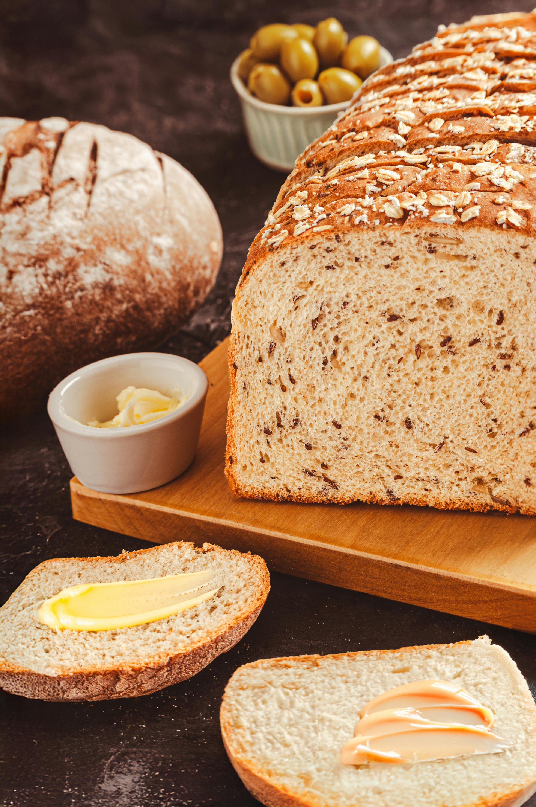

Founded in Faith & Obedience
Founded in Faith & Obedience
Where It Began
There was no rock bottom moment. No dramatic turning point. I was unemployed, had a little savings, and a lot of time on my hands. So I started by planting a garden in my backyard. That's it.
Nothing fancy. Nothing planned on a whiteboard. Just soil, seed, and something in me that needed to grow something real. Something I could touch, tend, and trust.
One garden became a few crop rows.
A few crop rows became a farm.
I still can't fully explain how we got here,
except that we kept going.
Heart of Texas Organics is what happens when you stop waiting for the perfect moment and just start. I led with obedience. This didn't begin as a business plan. It started as a calling. And it still is.
Our name reflects our standard, not a certification — and that matters. Certified organic is a process. What we practice is a commitment: avoiding chemicals, added hormones, antibiotics, and preservatives. Sourcing locally. Partnering with growers we know. And being completely honest about every ingredient that goes into what we make.
No shortcuts. No fine print. Just real food.
Founded on faith. Not a plan, a calling. We built this one obedient step at a time.
Committed, not certified. Organic is our practice, not just a label we pursued. The standard is higher than a checkbox.
Rooted in Texas. We source locally, support neighboring growers, and keep the supply chain short and honest.
Transparent by design. Every ingredient, every practice, every decision — we'll tell you about it. Ask us anything.

Our Ingredients
No fine print. No compromise.
No synthetic pesticides, herbicides, or fertilizers — ever. The land we farm on is cleaner than when we found it.
Our animals grow at the pace nature intended. No shortcuts in the barn, no shortcuts on the label.
What you eat from us is what it says it is. Clean ingredients, short shelf life, and no regrets.
"It didn't start as a business plan.
It started as a calling. And it still is."
